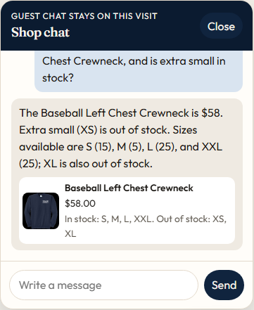
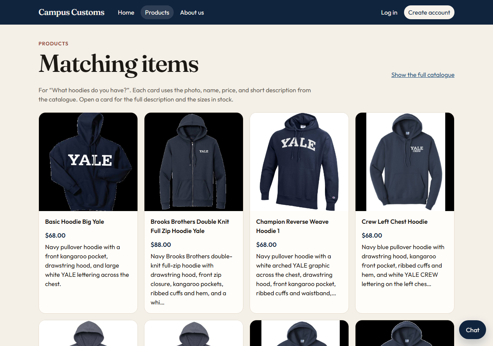
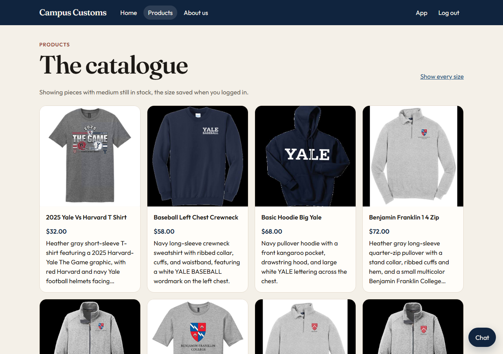

Three checks of the live shop at http://127.0.0.1:5173/.

The shopper asked the price of the Baseball Left Chest Crewneck and whether extra small is in stock. The reply says $58, marks extra small and extra large out of stock, and gives the other counts as S 15, M 5, L 25, and XXL 25. Those figures are the catalogue price and the inventory rows, including the sizes at zero.

After the question “What hoodies do you have?”, the products page shows Matching items for that question. Each card has the catalogue photo, name, price, and a short description, including Basic Hoodie Big Yale at $68.

Logging in with medium saved on the account opens the catalogue on pieces that still have a medium in stock. The page says so, and “Show every size” is there when the shopper wants the rest of the list.